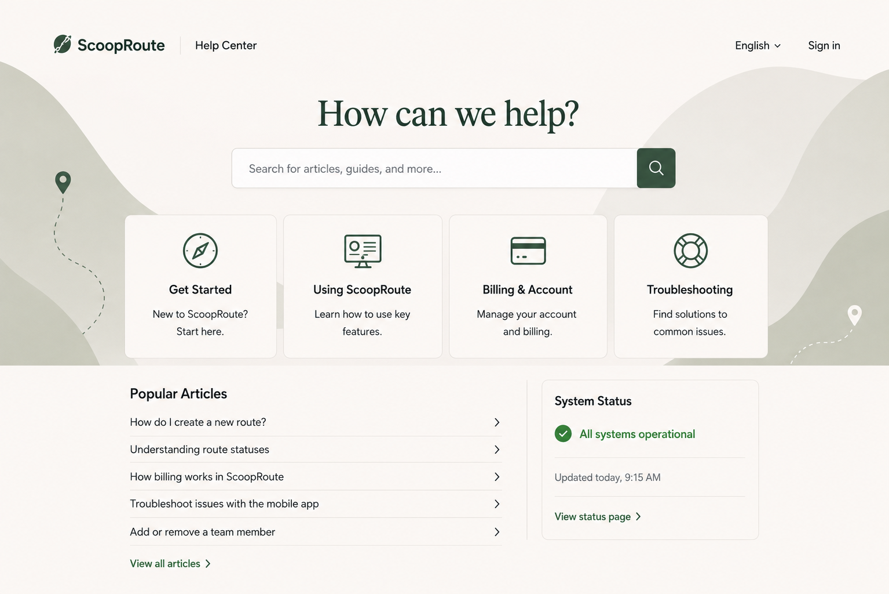

Case Studies
Real projects that demonstrate how I turn complex information into clear, usable content experiences. These case studies highlight documentation strategy, UX writing, release communication, and scalable content systems that support both users and teams.
Scaling SaaS Docs
A routing and mobile operations platform for ice cream delivery teams.
I partnered with product and engineering to build a documentation and UX content experience that reduced support volume and helped new users get up to speed—fast.
View full case study →- ✓ Documentation strategy & IA
- ✓ Help Center & API docs
- ✓ In-app guidance & microcopy
- ✓ Release notes & comms templates

Turning Product Knowledge into Academy-Ready Training
Created structured, task based source content that Academy teams could turn into onboarding, scripts, walkthroughs, and role based learning experiences.
- ✓ Structured complex workflows for Academy reuse
- ✓ Reviewed scripts for product accuracy and clarity
- ✓ Provided persona and onboarding sequence input
In-App Guidance & UX Content
Wrote in-app guidance, empty states, and microcopy that help users take action with confidence.
- ✓ Increased task completion and adoption
- ✓ Aligned tone and terminology across surfaces
- ✓ Collaborated closely with UX and PMM
AI-Assisted Documentation Workflow
Piloted AI tools to accelerate drafting and tagging while maintaining accuracy, clarity, and brand voice.
- ✓ Faster first drafts with human-in-the-loop review
- ✓ Scalable tagging and discovery improvements
- ✓ Created team guidelines and training
📅 6+ years
Technical writing and content design experience in SaaS environments.
💻 SaaS documentation
Help centers, API docs, UX writing, release notes, and in-app guidance for complex products.
📊 Pendo + Doc360
Leverage analytics and modern platforms to improve discoverability, adoption, and content impact.
👥 Cross-functional collaboration
Partner with product, engineering, design, and support to ship content that moves the needle.